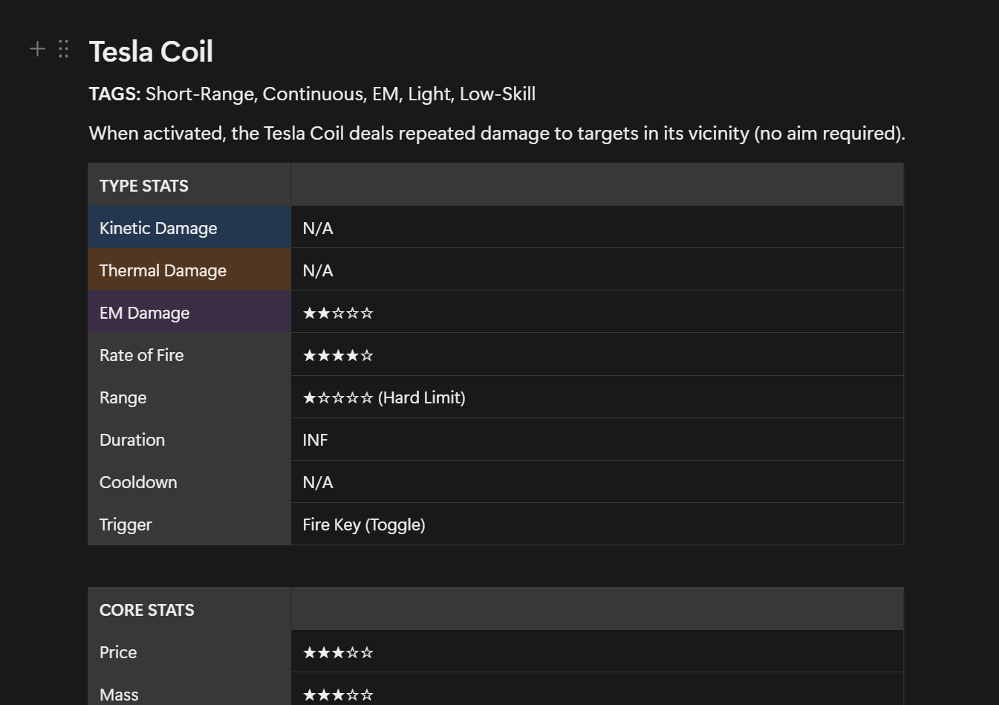
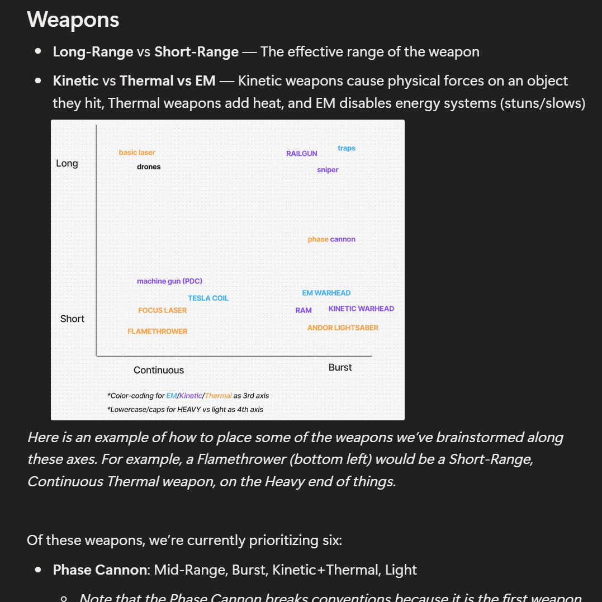

    <div>
        <div class="game-page">
            <div style="clear: both;"></div>

            <div class="game-page-top">
                <video autoplay loop muted playsinline class="cover-gif">
                    <source src="/images/videos/BLUE.mp4" type="video/mp4">
                </video>
                <div>
                    <h1>BLUE (2026)</h1>
                    <p class="game-summary">A multiplayer space engineering & combat game where you build complex
                        ships, bring them into an interactive, physics-based space arena, and adapt your designs on the fly
                        to outsmart your opponent.</p>

                    <div class="project-info">
                        <h2>Project Info</h2>
                        <p><b>Roles</b>: Engineer, Designer</p>
                        <p><b>Team Size</b>: 30+</p>
                        <p><b>Project Length</b>: 4 months</p>
                        <p><b>Engine</b>: Unreal 5 (C++)</p>
                    </div>
                </div>
            </div>

            <div style="clear: both; padding: 10px 0px;"></div>

            <div class="desc">

                <!-- Key Contributions -->
                <h2>Key Contributions:</h2>

                <button class="accordion-header" aria-expanded="false">Materials and energy systems<span>+</span></button>
                <div class="accordion-panel">
                    <div>
                        <p>The game involves a robust ship-building system, where each part you place is affected by every other part of the ship. To support this, I built a backend framework
                            to track materials for the building system and energy for part usage, including multiplayer synchronization and propagation across the ship graph.
                        </p><br>
                        <p>
                            A core feature of the energy system was making it fully modular, so that every part communicates with a central EnergyManager using a standardized EnergyUser component. This
                            allows designers to quickly add new parts or change which parts use energy, and guarantee that their changes will fit with the established system!
                        </p>
                    </div>
                </div>

                <button class="accordion-header" aria-expanded="false">Weapons design + implementation<span>+</span></button>
                <div class="accordion-panel">
                    <div>
                        <p>I designed the core weapon system for the game, created detailed specs for each weapon type, and implemented the phase cannon
                        and basic laser weapon types in-engine.</p>
                    </div>
                </div>

                <button class="accordion-header" aria-expanded="false">Improving team communication<span>+</span></button>
                <div class="accordion-panel">
                    <div>
                        <p>
                            I was initially brought on as a designer, but shifted toward the engineering team as the project went on. This meant that I had a strong
                            understanding of both the design goals and the engineering framework, which let me bridge communication between the two teams!
                        </p><br>
                        <p>
                            This project unfortunately suffered from a lot of gaps in communication, but I was able to spearhead efforts to improve this. Specifically, I
                            attended both the Design and Engineering team meetings, and briefed each team on what the other was focusing on that week. I also worked with
                            designers to create documentation for the weapons system that was easily readable by engineers, and talked to engineering to help compile a list
                            of technical constraints on possible weapons. This allowed us to enter production with a clear sense of what kinds of weapons we wanted to build,
                            and ultimately prevented any major pivots or confusion between teams.
                        </p><br>
                        <i>A sample of my weapon documentation:</i>
                        
                    </div>
                </div>

                <!--<button class="accordion-header" aria-expanded="false">Design documentation<span>+</span></button>
                <div class="accordion-panel">
                    <div>
                        <p style="margin-bottom: 10px;">Helped write a comprehensive, 30-page Game Design Document. I also created these:</p>
                        
                        <p><i>Initial Map Design</i></p>
                        <br>
                        <a href="https://www.notion.so/Parts-Design-Guide-293446cec2558060ac69c6038000a120"></a>
                        <p><i>A design system I created for describing spaceship parts.</i></p>
                    </div>
                </div>-->

                <br><br>
            </div>
        </div>
    </div>
